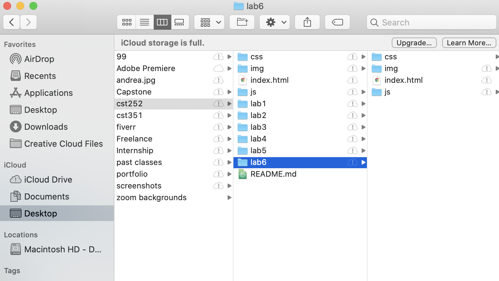

The idea of this lab was the further create a local structure on my computer and add index.html files.
Overall the lab was pretty easy because I had experience creating the file structures in 251 last semester. I had a little bit of trouble with creating my hero image option on my homepage to be the right dimensions. I ended up just changing the dimensions in illustrator and then adding it.
I was able to create all the correct file structures. I was also able to set up a site wide css file and design my Homepage with links to all of the labs, a photo, and description of myself.
